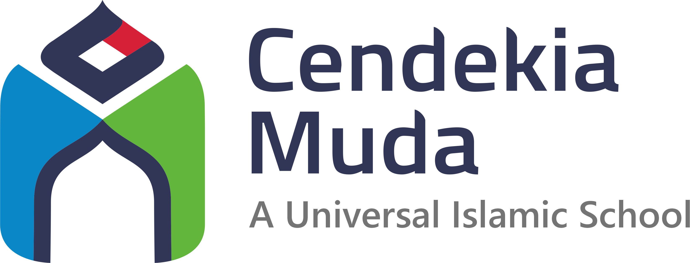

Materi tidak ditemukan
Coba kata kunci lain, misalnya nama mata pelajaran atau level kelas.

Akses cepat menuju Google Site pembelajaran resmi untuk unit TK, SD, SMP, dan SMA Sekolah Islam Cendekia Muda — cukup satu klik.
Coba kata kunci lain, misalnya nama mata pelajaran atau level kelas.
Trafik dan aktivitas pengunjung portal pembelajaran secara real-time.
Laporan ini bersumber dari Google Analytics 4 yang dihubungkan ke Looker Studio.
Kalau laporan belum tampil, lihat README.md pada folder project untuk cara menghubungkan GA4 ke Looker Studio.